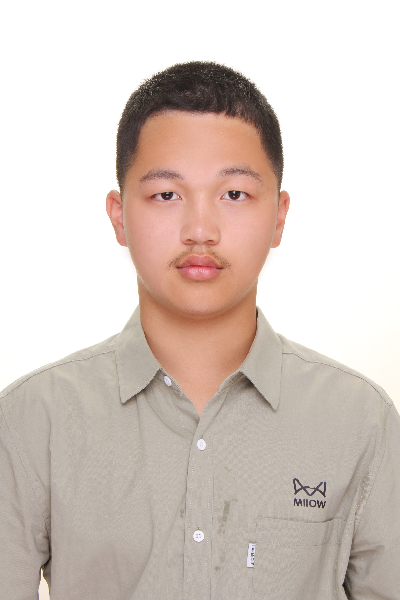

M.Sc. in Applied Mathematics
Sep 2025 – Expected 2027
Université Grenoble Alpes, France

I am a second-year master's student in Applied Mathematics at Université Grenoble Alpes. I completed my B.Sc. in Mathematics and Applied Mathematics at the University of Science and Technology of China (USTC), where I studied in the China–France Mathematics Talents Class of the School of the Gifted Young.
My research lies at the intersection of optimization and machine learning, focusing on algorithms for optimization methods for large-scale learning. I am drawn to problems where rigorous mathematics meets practical computation.
Feel free to reach me at quyi_le@outlook.com · Grenoble, France